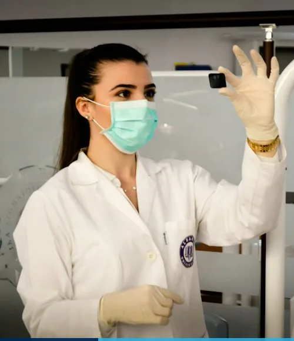
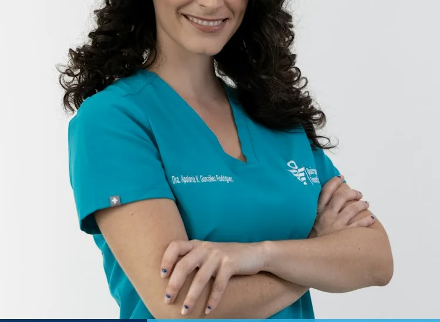

Browse Our Virtual Specialist Directory
Filter by clinical department to view consultant credentials, languages spoken, and live video availability.
Dr. Sebastian Clarke
Consultant Tele-CardiologistDr. Amelia Thornton
Consultant Tele-NeurologistDr. Vikram Mehta
Consultant EndocrinologistDr. Chloe Richardson
Consultant DermatologistDr. Liam O'Connor
Consultant PulmonologistDr. Zara Al-Mansoor
Consultant PediatricianDr. Edward Hughes
Consultant Tele-Psychiatrist
Dr. Freya Lindqvist
Consultant Orthopedic Rehab
Prof. Eleanor Vance, MD, FRCP
Chair of Clinical Telemedicine & Senior Consultant Neurologist
"Virtual medicine is not about replacing the human bond between doctor and patient—it is about removing the friction of distance so we can spend 100% of our time listening, examining live telemetry, and crafting precise treatment plans."
9,400+
4K Video Consults42
Peer-Reviewed Papers4.99 / 5
Patient Trust ScoreOnly the Top 4% of UK Applicants Join Our Panel
Every physician undergoes a stringent 5-stage credentialing and digital clinical simulation process before seeing patients.
GMC Specialist Check
Direct verification of full General Medical Council specialist registration, clean license history, and Enhanced DBS clearance.
10+ Years Seniority
Minimum 10 years of post-qualification UK NHS or Harley Street hospital experience at Consultant or Senior GP Partner level.
Tele-Exam Certification
40 hours of accredited training in virtual physical examination, camera-assisted neurological testing, and remote red-flag triage.
Monthly Peer Audit
Continuous clinical chart review, antibiotic stewardship scoring, and patient outcome tracking by our CMO board.
Weekly Specialist Tele-Consultation Roster
Our on-demand GP desk operates 24/7. Below are the core live clinic windows for our senior sub-specialty consultants.
| Lead Consultant | Specialty Unit | Mon – Wed | Thu – Fri | Sat – Sun |
|---|---|---|---|---|
| Dr. Sebastian Clarke | Tele-Cardiology | 07:00 – 15:00 | 12:00 – 20:00 | 09:00 – 16:00 |
| Dr. Amelia Thornton | Tele-Neurology | 08:00 – 17:00 | 08:00 – 17:00 | 10:00 – 15:00 |
| Dr. Chloe Richardson | Teledermatology | 09:00 – 19:00 | 10:00 – 21:00 | 09:00 – 17:00 |
| Dr. Zara Al-Mansoor | Virtual Pediatrics | 06:00 – 22:00 | 06:00 – 22:00 | 24/7 On-Call |
| Dr. Vikram Mehta | Tele-Endocrinology | 08:30 – 17:30 | 09:00 – 18:00 | 09:00 – 14:00 |
Multilingual & Accessible Consultations
Communicate in the language you feel most comfortable with, supported by real-time closed captioning and BSL interpreters.
Are You a GMC-Registered Consultant or GP?
Join Stackly Telemedicine's clinical network and practice flexible, high-impact medicine from our Harley Street studios or your encrypted home workstation. We handle all CQC compliance, medical indemnity, and AI charting.
- Dual-Monitor 4K Workstation Provided
- Automated FHIR Clinical Note Drafting
- Full Medical Defense Indemnity Covered
- Flexible 4-Hour Clinical Sessions
What Patients Appreciate About Our Doctors
Unedited post-consultation ratings submitted by UK patients immediately following their video visits.
"Dr. Clarke shared his screen to walk me through every wave on my 7-day ECG patch. I have never felt so listened to or reassured in a cardiology appointment."
"Within 15 minutes of uploading dermatoscope photos, Dr. Richardson diagnosed my rosacea subtype and arranged a custom prescription cream that cleared my skin in 3 weeks."
"Warm, calm, and incredibly thorough with our toddler at 10 PM. Having a senior hospital pediatrician on video saved us a 5-hour wait in A&E."
Questions About Seeing Our Doctors
Can I book follow-up appointments with the exact same doctor?
Can Stackly Telemedicine doctors write NHS GP letters and private referrals?
How do I verify a doctor's GMC registration number?
Book a 1-on-1 Video Session With Your Chosen Doctor
Choose your preferred consultant below. All fields are mandatory and validated in real time to ensure your booking is processed without delay.
Harley Street Chambers
221B Harley Street, Marylebone, London W1G 9QT, United Kingdom
Doctor Booking Desk
Medical Secretary Email
Direct Doctor Consultation Form
All fields are required. Name accepts alphabets only; Phone accepts numbers only; Past dates are restricted.